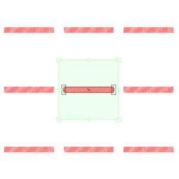

Patternshop permet de créer très rapidement et intuitivement des réseaux type écossais, prince de galles, etc.
Cela demande simplement de bien préparer au préalable les motifs qui seront utilisés. Inspirez vous de ceux de ce tutorial pour créer les vôtres.
Les Motifs utilisés :
Pour simuler le tissu on se sert de bandes hachurées de différentes hauteurs mais de même largeur (ici 500 pixels) :

Ouvrez un nouveau document (Ctrl + N)
Une boîte de dialogue vous invite à rentrer la largeur et la hauteur de votre image et sa résolution.
Rentrez « A4 » dans les formats prédéfinis.
Importez le motif BandeRouge disponible dans la banque de motifs (Ctrl + D)

Il est important de redimensionner la matrice de façons ce qu’elle fasse la même largeur que le motif.
Pour ce faire, faites un copier-coller de la valeur Largeur (L ) du champ Dimension de l’onglet Motif vers les champs Dimension de l’onglet Matrice de la Fenêtre Transformations.
La matrice fait désormais exactement la taille du motif :
La division de la matrice vous permet de monter avec précision votre réseau.
Activez la division de la matrice et rentrez dans les champs dL et dH les valeurs 2 et 2 :
Sélectionnez le motif et dupliquez le : (Ctrl + R)
Tournez le nouveau motif de 90°.

Remarque : Activez le magnétisme de l’intersection en maintenant Shift enfoncé lorsque vous déplacez le motif.
Importez d’autre motifs et dupliquez les pour monter votre réseau :
Apres importation du motif BandeJaune :

Apres importation du motif BandeMarine :

A ce stade vous pouvez changer la couleur d’arrière plan :

Apres importation du motif BandeBlanche :

Le motif BandeBlanche est répété deux fois dans la largeur et deux fois dans la hauteur.
Notez que vous pouvez jouez avec l’ordre des calques pour faire passer une couleur devant une autre, etc.
Basculez votre réseau à 45° en pivotant la matrice avec les touches Ctrl et Shift enfoncées.
(Ctrl lie les motifs à la matrice, Shift permet de tourner la matrice par pallier de 22,5°)